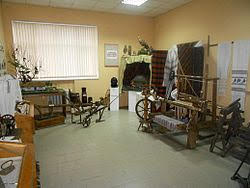
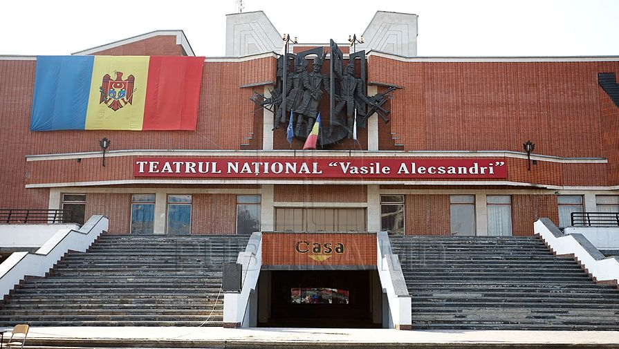
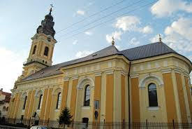
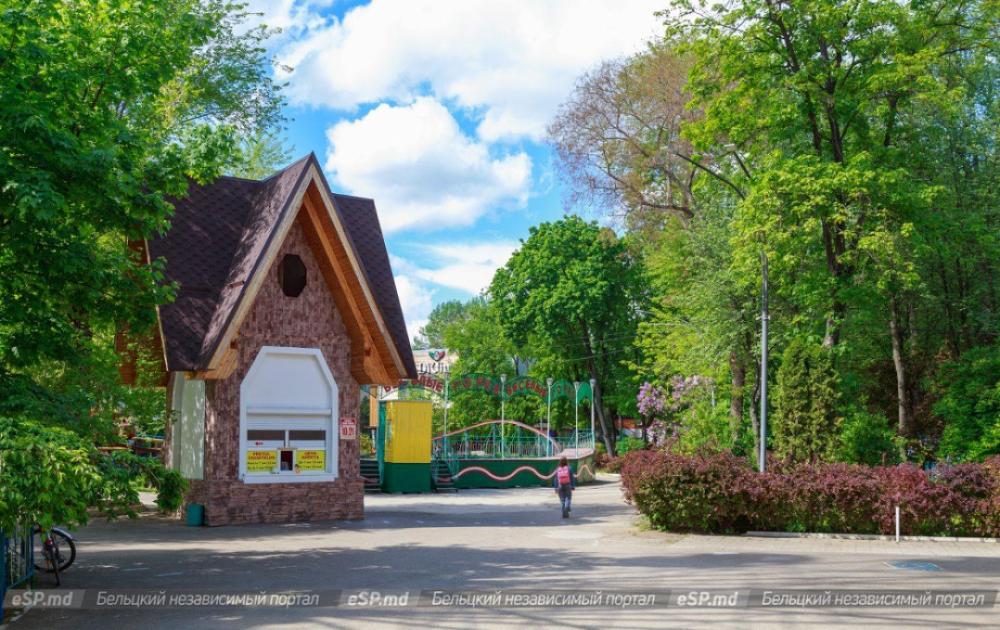
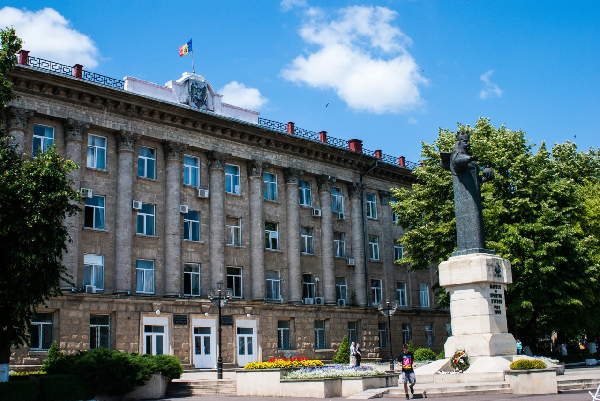

Explorează Bălțiul
"Muzeul de Istorie și Etnografie din Bălți"

Istoria acestui muzeu începe în anul 1960, fiind una dintre cele mai importante instituții culturale din nordul țării. Muzeul deține o colecție impresionantă de mii de piese care reflectă viața oamenilor din stepa Bălțului, de la unelte străvechi până la costume populare autentice. Expoziția permanentă prezintă evoluția orașului de-a lungul secolelor, punând accent pe meșteșugurile tradiționale și pe viața urbană de altădată. Muzeul organizează frecvent expoziții temporare de artă și istorie, devenind un punct de întâlnire pentru istorici și iubitori de cultură.
"Teatrul Național „Vasile Alecsandri"

Istoria teatrului din Bălți începe în anul 1957, fiind una dintre cele mai importante instituții de artă din Republica Moldova. Clădirea actuală, o adevărată bijuterie arhitecturală modernă, a fost inaugurată în anul 1990 și impresionează prin designul său monumental și sălile spațioase. Este singurul teatru din afara capitalei Chișinău care deține statutul de „Teatru Național”, recunoaștere primită pentru calitatea excepțională a spectacolelor și a actorilor săi. Repertoarul include piese clasice ale lui Vasile Alecsandri, dar și drame moderne, atrăgând spectatori din întreaga regiune de nord. Teatrul nu este doar un loc de spectacol, ci un simbol al identității culturale a orașului Bălți.
"Catedrala Sfântul Nicolae”

Catedrala a fost ridicată între anii 1791 și 1795, fiind cel mai vechi monument de arhitectură din oraș care s-a păstrat până astăzi. Ideea construcției îi aparține boierului Panaite Sandu, care a dorit să ridice un lăcaș sfânt impunător în centrul târgului. Arhitectura catedralei este unică, îmbinând stilul bizantin cu elemente de baroc târziu, având o compoziție simetrică și ziduri groase din piatră. De-a lungul timpului, catedrala a supraviețuit multor încercări istorice, rămânând centrul spiritual al „Capitalei de Nord”.
"Parcul Municipal "Andrieș" "

Este cel mai îndrăgit spațiu verde din Bălți, situat chiar în inima orașului. Parcul a fost amenajat acum mai bine de un secol și a purtat diverse denumiri de-a lungul timpului, fiind martorul evoluției moderne a urbei. În interiorul parcului se găsesc alei liniștite, monumente istorice și zone de agrement pentru copii. Este un loc plin de viață, unde cresc zeci de specii de arbori și arbuști, unii dintre ei având o vârstă venerabilă. Propunerile arhitecturale din trecut au vizat mereu păstrarea caracterului său primitor, fiind locul principal de relaxare pentru bălțeni în weekend.
"Primăria Municipiului Bălți"

Clădirea Primăriei este centrul administrativ al orașului și una dintre cele mai impunătoare construcții din Piața Vasile Alecsandri. Arhitectura sa monumentală, cu coloane înalte și fațadă deschisă, domină centrul pietonal. În fața edificiului se află impunătorul monument al lui Ștefan cel Mare și Sfânt, locul unde se desfășoară cele mai importante ceremonii oficiale și sărbători naționale. Primăria nu este doar sediul puterii locale, ci și un punct de reper pentru toți cetățenii, fiind inima vieții politice și sociale a „Capitalei de Nord”.
Itinerariu Recomandat: 24h în Bălți
| Interval Orar | Locație / Obiectiv | Activitate Principală | Cost Estimativ |
|---|---|---|---|
| 09:00 - 11:00 | Catedrala Sf. Nicolae | Vizită culturală și arhitecturală | Gratuit |
| 11:00 - 13:00 | Muzeul de Istorie | Explorarea expozițiilor tematice | 10 - 20 MDL |
| 13:00 - 15:00 | Piața Vasile Alecsandri | Prânz și plimbare în zona pietonală | 150 - 300 MDL |
| 15:00 - 17:00 | Parcul "Andrieș" | Recreere și fotografii la fântâna arteziană | Gratuit |
| 18:30 - 20:30 | Teatrul Național | Vizionarea unei piese de teatru | 50 - 150 MDL |